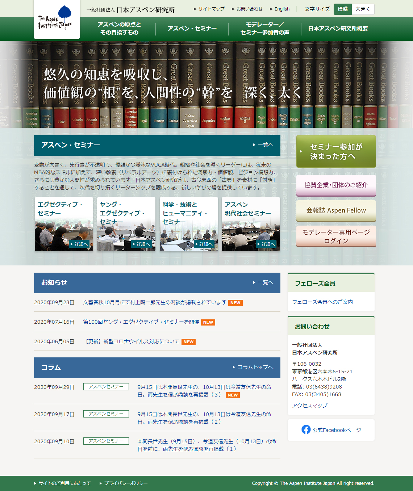
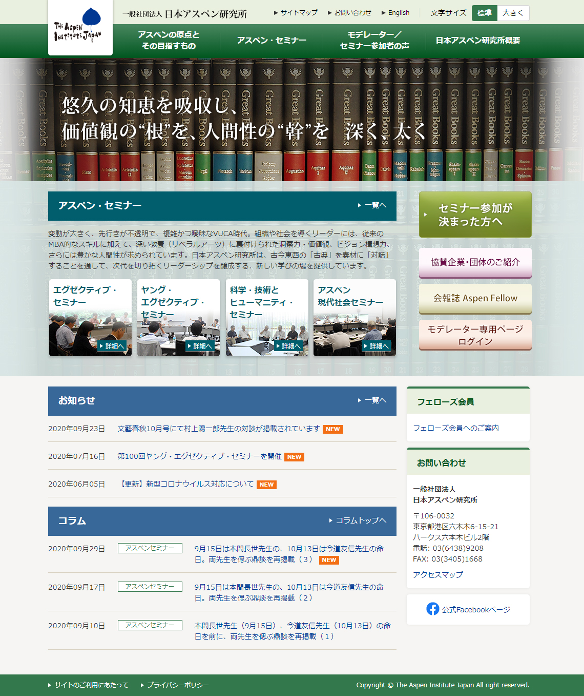

work

CSS/HTMLを使用した運用サイト外対応
HTML / photoshop
こちらは新たにページを作成したいとの要望があり作成したページになります。
大体のレイアウトの原稿や、写真などの資料いただき運用ルールに基づき作成いたしました。
新規に作成していく際はお客さんとイメージをすり合わせながらページ作成を行います。


HTML / photoshop
こちらは新たにページを作成したいとの要望があり作成したページになります。
大体のレイアウトの原稿や、写真などの資料いただき運用ルールに基づき作成いたしました。
新規に作成していく際はお客さんとイメージをすり合わせながらページ作成を行います。